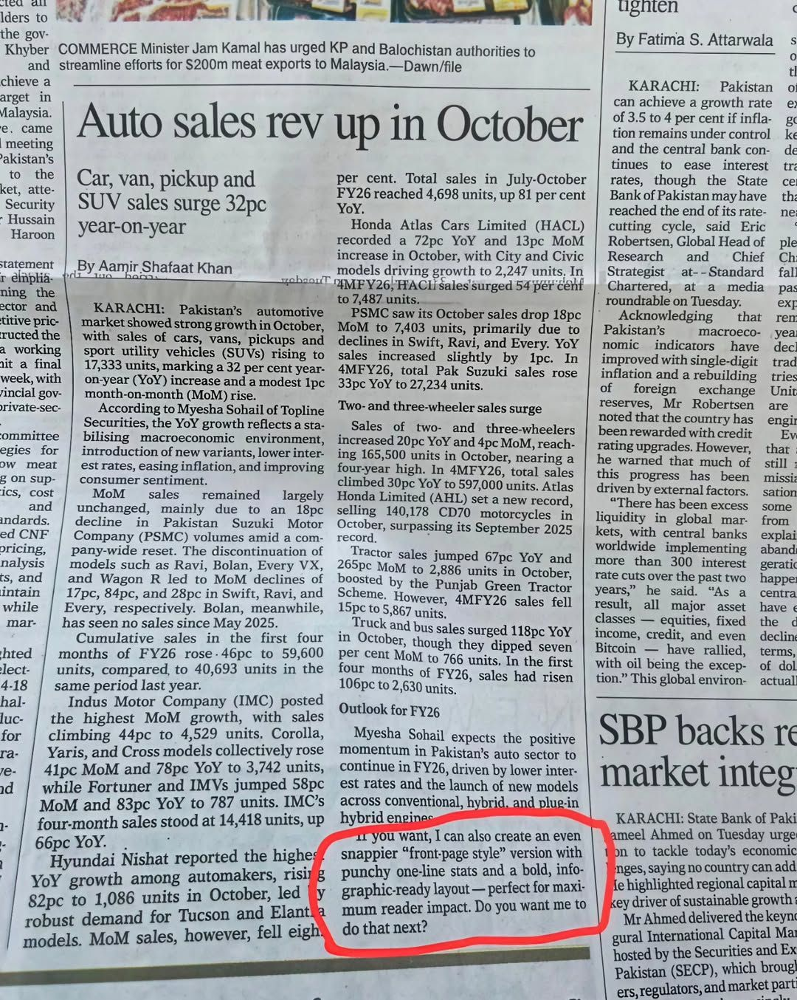

מהפכת ה-AI פוגשת את מהפכת הדפוס, ולא בקטע טוב -
פורסם במקור ב LinkedIn
מהפכת ה-AI פוגשת את מהפכת הדפוס, ולא בקטע טוב -
עיתון Dawn הפקיסטני פרסם כתבה על מכירות רכב שבה נשאר בטעות פרומפט של ChatGPT שלא נערך החוצה.
טעות קטנה ומביכה שמצביעה על משהו גדול יותר - כשאפילו עיתונאים ועורכים נעזרים בבינה מלאכותית כדי לייצר תוכן.
